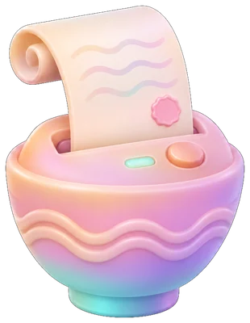
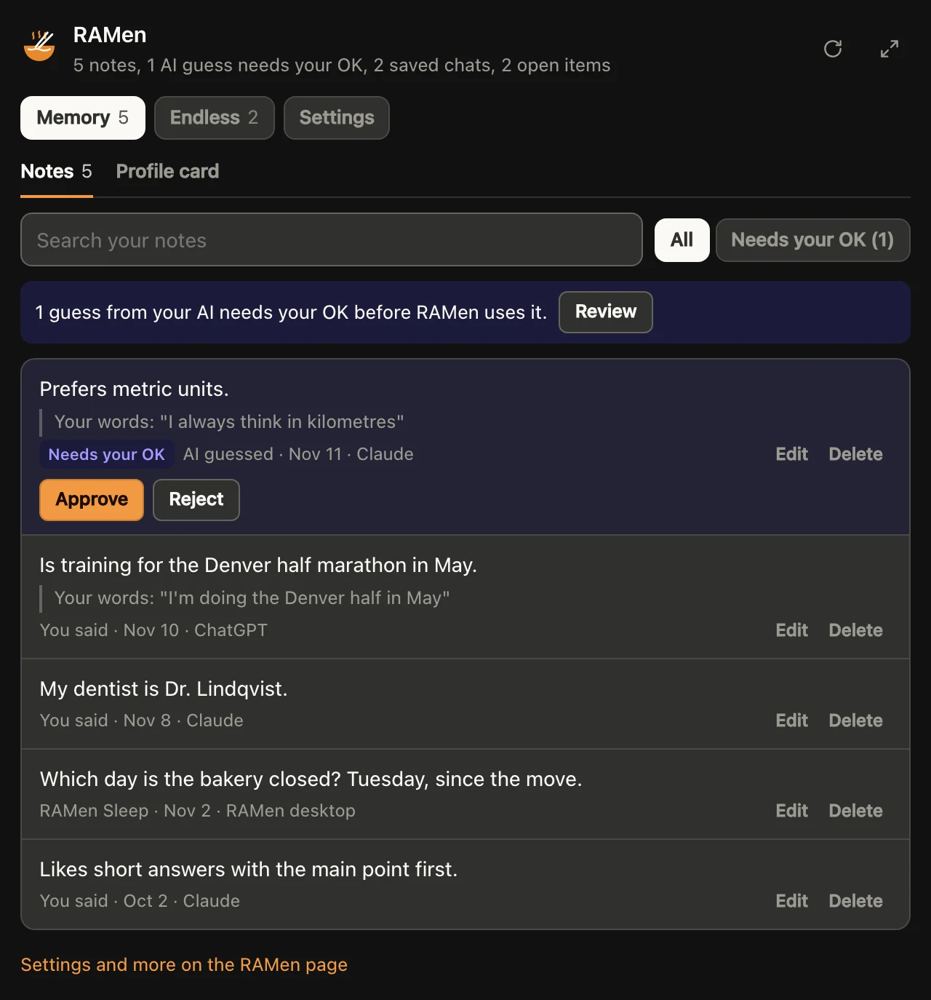
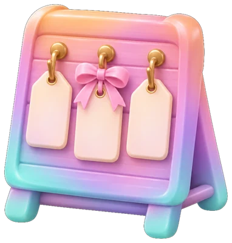
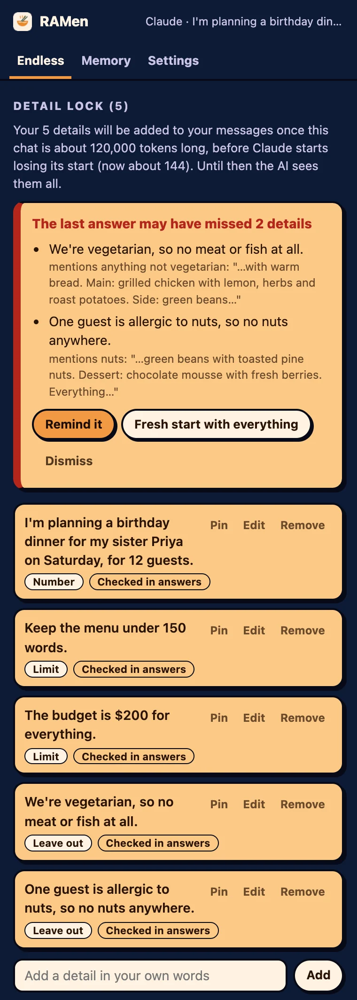

Free
$0for good
- RAMen Memory: 50 notes and 3 must-know facts, with receipts
- In 2 apps at a time
- RAMen Endless: 3 chat saves a month
- Nothing you save is ever locked away

RAMen remembers what you tell any of your AIs, and with selective memory each answer pulls only what it needs, on demand. All on the plan you already pay for.
14 days free ✦ Then $1.99 a month ✦ Cancel any time
Works with the AI you already use
RAMen works inside the AI apps you already use. Your AI does the work on your own plan, and RAMen keeps the memory.

One memory for all your AIs, with receipts. See or forget anything.
How it remembersLong chats that keep the thread. Detail Lock keeps the details you set.
How chats keep goingRAMen on your own computer, for AI that runs there.
Get the appIn the AI apps you already use ✦ No API keys ✦ No extra AI bill
Long chats re-read everything. With selective memory, your AI pulls only what each answer needs, when it asks for it.
Not the whole 23,000-token conversation.
An 80-message chat, continued in a fresh one. Every answer still right: 48 of 48.
24-turn chats, answers judged as good, with Claude and local models.
Turn it on when details matter: once a chat gets long, it adds your list of details to each message, so it uses more tokens while it is on. How it works
Each number measured on its own, by us, November 2026. How we measured
Tell Claude something on Monday, and ChatGPT knows it on Tuesday. Each note keeps the date and the app, and your own words when your AI saves them. When the AI only guesses, it waits for your OK.

The date, the app and who said it, with your own words when your AI saves them. Guesses wait for your OK.
One question searches every note and saved chat.
How you like answers, in every app you use.
Look through it all, even right in the chat. Delete anything.
Your ChatGPT and Claude history, brought in with RAMen Desktop.
Mark what every AI must keep in mind, like an allergy. RAMen hands it over first.
The memory panel, shown with sample notes. How it works ✦ Privacy
Tested: must-know facts cut wrong answers 7 times, from 21 in 60 to 3 (Claude Haiku 5.5, requests where a saved fact changes the answer). How we measured
Long chats eat your limits and start to forget. RAMen saves the chat, and a fresh chat, or another AI, picks up right where you left off.
YouPlease save this whole chat to RAMen as a thread, with the email draft, so I can continue it in a fresh chat.
The numbers, decisions and drafts it saved, word for word.
YouContinue my RAMen thread team offsite. How many people are coming now, and what was it before?
Claude14 people now. It was 12 before.
Tested: the next day, in another AI, 18 of 22 details of a 150-message plan came back with RAMen, and none without. How we measured ✦ How it works
The RAMen add-on saves long chats every 15 messages. Elsewhere, ask your AI to save.
Go on in a fresh chat, or in another AI.

Every to-do from every saved chat, in one place.
Say "Load my wedding project" and a new chat picks up its goal, decisions, open items and drafts.
In long chats, AIs can drop details you set. Detail Lock is a switch for when they matter: it keeps a list of the details you set, adds it to your messages and flags an answer that drops one it can check.
The limits, names, dates and rules it finds in your messages, and things to leave out. Add any it missed.
Once RAMen estimates the chat is too long for the AI to see it all, the list goes along with every message you send. Or always, or never: your choice.
It checks the details it can, like limits and things to leave out, and flags any the answer dropped. Remind it in one click, or start fresh with everything.
In the add-on's Settings: when the list goes along, and whether it checks answers. It makes your messages longer, so it uses more tokens while it is on. It is off on RAMen Free.
With the RAMen add-on for Chrome, on
Tested: once a chat was too long for the AI to see it all, Detail Lock cut the details it dropped 4.7 times (ChatGPT's model, about 7,000 tokens in view), while the AI read 2.2 to 2.5 times the tokens with RAMen's tools and the list. How we measured
Detail Lock's lists stay in your browser, except in your own messages and when it saves a long chat to your own RAMen (you can turn that off).

The add-on after a sample chat.
RAMen on your own computer, for AI that runs there. Your chats come back in seconds, your local models get your memory and Sleep notes, and Claude Code and Codex can run on them.
Mac and Linux:
curl -fsSL https://getramenai.com/install.sh | bashWindows:
irm https://getramenai.com/install.ps1 | iexIt picks a model that fits your computer, and your chats come back in seconds.
ramen startYour local models know what you told Claude and ChatGPT. Bring in your old chats too.
ramen online ramen importAt the end of the day, your own model keeps notes of what you told it.
ramen sleepRun them on a model on your own computer, with its memory.
ramen claude ramen connect codexOne $1.99 plan covers all of them. Start your trial, then sign in with the key from your email.
On the web, desktop and phone, and in other AI apps that take connectors.
In Claude
https://ramen-online.matthewsleibel.workers.dev/mcpI use the RAMen connector as my memory across my AI apps. Before answering anything about me (my people, work, plans, preferences or earlier chats), check RAMen Memory. When I tell you a lasting fact about myself, save it to RAMen Memory as well. In a long chat, save it to RAMen as a checkpoint about every 15 messages, without asking me.In ChatGPT, on a paid plan
Open Plugins, choose Add custom MCP server and paste the same address. Sign in with your RAMen key, then add the same line to Custom instructions, without its last sentence: in ChatGPT, RAMen saves a chat only when you ask.
Detail Lock, your memory and Endless on ChatGPT, Claude, Gemini, Grok, Perplexity, Copilot, DeepSeek, Mistral, Meta AI, Poe and Qwen, even the sites that cannot take a connector.
Add to ChromeThe same memory in your coding sessions:
/plugin install ramen-memory --marketplace MatthewLeibel/ramen-pluginsCursor, VS Code, Codex, Windsurf or Zed? Add RAMen as an MCP server: the steps.
See and search what RAMen keeps, edit or delete notes, approve guesses and tick off open items on your RAMen page.
Start with 14 days of everything. Then keep going on Pro, or switch to RAMen Free and keep your memory.
One account, one plan with everything in it. Try it free for 14 days.
14 days of everything, then $1.99 a month or $19 a year, your choice at checkout. The trial asks for a card; cancel before it ends and you pay nothing.
Bought Pro for life? Nothing changes. You keep it.
Secure checkout by Polar ✦ Sales tax handled at checkout ✦ Cancel any time in your customer portal
No. RAMen works inside Claude or ChatGPT, on the plan you already pay for, with no API keys. Like any connector, it uses a little of each chat, and Detail Lock more while it is on. RAMen Desktop runs AI on your own computer; if you pick a cloud model there with your own key, its provider bills you for it.
Yes, and each part was measured on its own: about 1,200 tokens of memory an answer instead of a 23,000-token conversation, 83% fewer to keep going from a saved chat (an 80-message chat, 48 of 48 answers right), and up to 70% fewer in long chats on RAMen Desktop. Detail Lock is the exception: it adds its list to your messages, so it uses more while it is on. How we measured
Yes. In the add-on's Settings, choose when its list goes along with your messages (once the chat gets long, always or never) and whether it checks each answer. Never, with checks off, turns it off. It is off on RAMen Free.
Inside Claude on the web, desktop and phone, and ChatGPT on paid plans, through the RAMen connector. On AI websites in Chrome, including Gemini, Copilot, DeepSeek, Meta AI, Poe and Qwen, through the RAMen add-on, in the Chrome Web Store. In Claude Code through the plugin, and on your own computer with RAMen Desktop.
Each note shows the date and the app it came from, and your own words when your AI saves them. When the AI guesses something about you, the guess waits for your OK.
Add the line from the setup to Claude's instructions, and Claude checks RAMen for anything about you.
Yes. It is never sold or used for training, and you can delete any of it. Detail Lock's lists stay in your browser, except in your own messages to the AI and when it saves a long chat to your own RAMen. Privacy
Keep everything for $1.99 a month, or $19 a year. Or switch to RAMen Free: get a free key with the same email and sign in again, and your memory comes with you, within Free's limits (50 notes, 3 must-know facts, 2 apps and 3 chat saves a month). Nothing you saved is locked away.
Keep everything for $1.99 a month, or $19 a year.
Yes. RAMen Lifetime is everything in Pro for one payment of $79, for one person, for as long as RAMen runs. The first 500 buyers pay $49.
Nothing. You keep it.
Any time, in your customer portal. Refunds
No. The connector and the Chrome add-on work without it. RAMen Desktop is for AI that runs on your own computer.